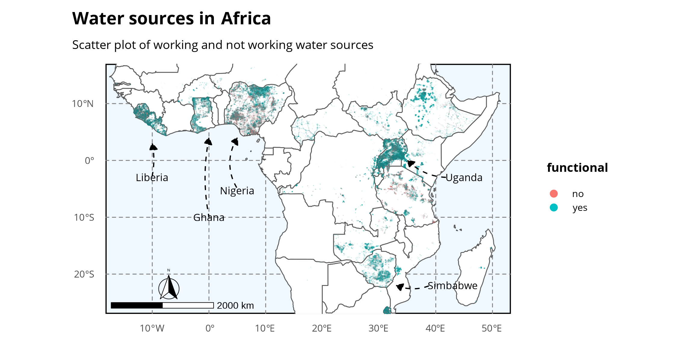

data <- tidytuesdayR::tt_load("2021-05-04")Water Sources
Tidy Tuesday
This is my fourth contribution to TidyTuesday, which is ‘a weekly podcast and community activity brought to you by the R4DS Online Learning Community’. Their goal is to help R learners learn in real-world contexts.
For more information, visit the TidyTuesday homepage, check out their GitHub repository and follow the R4DS Learning Community on Twitter.
The purpose of these posts is mainly for exercising purposes. Thus, the provided graphs are not necessarily designed to provide the greatest possible insights. However, I always provide the R code for interested people at the page bottom.
Water Sources
This week’s data comes from Water Point Data Exchange. It is a smaller sub-dataset from the original data to include mainly African data.
Using this data and advanced GIS and machine learning analysis, several decision support tools were built. Designed in partnership with governments and data scientists, these tools provide concrete insights, like which water point to send a technician to rehabilitate next to reach the most people.
– Katy Sill, Adam Kariv
Scatterplot of the data
A scatterplot of the data shows the locational distribution of the observations. Arrows indicate countries with a relatively high water source density.

Type and Status of Water sources
Further interesting insights yields a bar plot of the types of water sources and an indicator of functionality:

Boreholes are by far the most important source of water in the regarded countries. There is however a relatively large fraction of malfunctioning water sources as can be seen in the plot.
References
ggtext-package:
https://wilkelab.org/ggtext/showtext-package:
https://github.com/yixuan/showtexttidyverse-package:
https://www.tidyverse.org/rnaturalearth-package:
https://docs.ropensci.org/rnaturalearth/rnaturalearthdata-package:
https://docs.ropensci.org/rnaturalearthdata/ggspatial-package:
https://paleolimbot.github.io/ggspatial/sf-package:
https://r-spatial.github.io/sf/data.table-package:
https://rdatatable.gitlab.io/data.table/
Full R code available on Github.